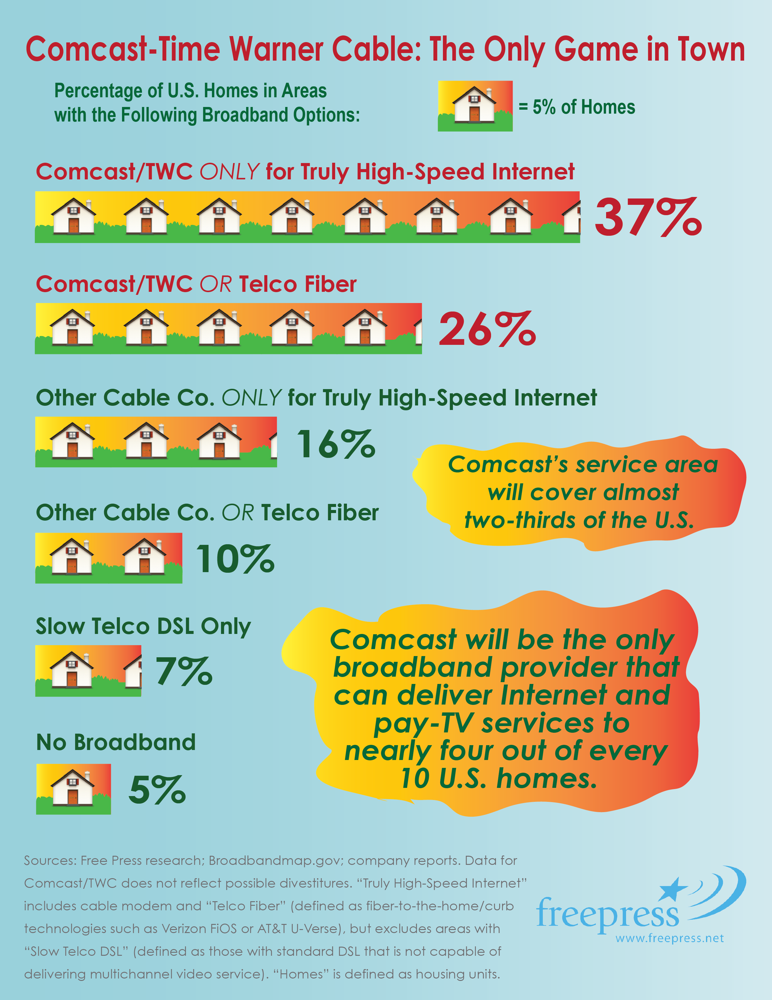

It’s almost this bad. Already.
Watch this video. If this is how you feel about Comcast right now, just remember one thing: after the Time Warner Cable takeover, it will only get worse.
The only game in town.
If this merger goes through, a staggering number of Americans will have only *one* choice for high speed Internet access. You guessed it: Comcast.
Our Letter to the FCC
Dear Chairman Wheeler,
The proposed merger between Comcast and Time Warner Cable is a disaster and must not be approved. No single firm -- and especially one that ranks as the most-hated company in America -- should be handed this much power over the future of media and the Internet.
The combined company would be an Internet and cable TV juggernaut with unmatched power to crush competition and hike prices for consumers. In fact, Comcast has admitted that prices will only go up.
Comcast is already the nation’s largest Internet provider. With this takeover, Comcast would control the wires reaching into nearly 6 out of every 10 American homes. Comcast has been caught before abusing its gatekeeper power and violating Net Neutrality. Such problems will only worsen if this once-unthinkable deal moves forward.
There’s no question this takeover would harm the public interest the FCC is supposed to protect. You have said yourself that America has too little broadband competition. I urge you to block the proposed merger of Comcast and Time Warner Cable.
Who’s against the takeover
Petitions to Deny the Merger
- TVC-US
- Cogent Communications Group
- Netflix
- Los Angeles County, CA
- Montgomery County, MD
- City of Portland, OR
- Ramsey-Washington Counties (MN) Suburban Cable Communications Commission
- Sinclair Broadcast Group
- Frontier Communications Corporation
- Greenlining Institute
- Zoom Telephonics
- Free Press
- NTCA
- WeatherNation TV, Inc.
- DISH network Corp
- Lincolnville Networks, Inc.
- Tidewater Telecom Inc
- Oxford Telephone Company
- Oxford West Telephone Company
- Unitel, Inc.
- ITTA
- The Sports Fans Coalition
- Public Knowledge
- Open Technology Institute at the New America Foundation
- Consumers Union
- Common Cause
- Comptel
- Writers Guild of America, West, Inc.
- Future of Music Coalition
- RCN Telecom Services, LCC
- Grande Communications Networks, LLC
- Choice Cable TV
- Consumer Federation of America
- Arizona Consumers Council
- Arizona PIRG
- CALPIRG
- Center for California Homeowner Association Law
- Chicago Consumers Coalition
- Columbia Consumer Education Council
- CONNPIRG
- Consumer Action
- Consumers Empowered
- Consumer Federation of the Southeast
- Florida Consumer Action Network
- Illinois PIRG
- Massachusetts Consumers’ Coalition
- Massachusetts Consumers’ Council
- MASSPIRG
- National Consumer Law Center
- North Carolina Consumers Council
- Oregon Consumer League
- Texas Consumer Association
- U.S. PIRG
- Virginia Citizens Consumer Council
- Wisconsin Consumers League
- WISPIRG
- California Black Media
FAQs
I cut the cord a long time ago and only subscribe to streaming services. How will this impact me?
Online video and innovation will suffer most.
Comcast doesn’t want you getting your Scandal fix from Netflix or Amazon Prime so it’ll do everything it can to keep you as a subscriber even if you watch all your TV online. That’s what happens when your Internet company is also your cable company.
Comcast and Time Warner Cable don’t compete anyway, so how does this deal impact consumers?
This is all about competition and market power.
The merger will bring us one giant company that controls marquee television and movie content, as well as the primary vehicles — a major television broadcast network, a major cable system operator and a major broadband Internet access provider — for distributing that content.
Doesn’t Comcast have to abide by the FCC’s old Net Neutrality rules?
Comcast’s commitment to Net Neutrality expires in 2018.
Comcast has to obey the FCC’s Open Internet Order, but only as a condition of their previous merger with NBC. These protections come with a clear expiration date in 2018.
And it’s important to remember that the only reason Comcast is under these conditions is because it was caught illegally blocking lawful file-sharing applications. This is the same company that degraded Netflix service for its own customers as a bargaining chip. And Comcast executives have been quite clear about their desire to divide the Internet into fast and slow lanes.
Comcast has long exploited loopholes in FCC rules to favor its own services and harm competitors. And the FCC’s old Open Internet Order doesn’t apply to interconnection, the point at which Internet content companies hand off traffic to Comcast for deliver on its network.
In the end, the company’s empty promises aren’t any consolation given how the merger will erode our online rights over the long term.
Would combining these companies be beneficial for customers?
Doubtful. Comcast and Time Warner Cable are both routinely at the very bottom of customer-satisfaction lists. They are ranked as the worst companies in America.
If these companies can’t serve their existing communities well, how will expanding help? If anything Comcast will have even less incentive to provide good, reliable service because it knows its subscribers have nowhere else to turn.
And Comcast already has too much control over content. Because a bigger, badder Comcast would control both content and distribution on a grander scale, it would have both the incentive and the power to limit access to competing content on the distribution platforms it owns. It could also try to outright deny its competitors access to its content.
I don’t subscribe to Comcast or Time Warner Cable... does this deal affect me?
This new giant company would have so much power over programming and such a chokehold on innovation that no new channels or services are going to get off the ground without permission from Comcast.
And whether you’re a cable subscriber or not, you’ll end up paying more because the costs of doing business with Comcast will be passed on to you.
But this deal isn’t just about dollars. It’s about democracy.
Comcast already wields a great deal of power in Washington: The company spent more than $18 million on lobbying in 2013 alone. The merger would give Comcast an even better shot of ensuring that future communications policies favor its bottom line.
Don't let it happen.
We have an opportunity to stop this thing, right now. The deadline for comments to the FCC is October 8th. Make your voice heard!
Take Action!